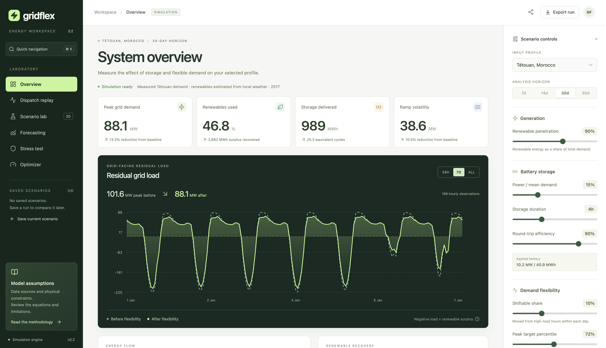

Case study / 01 · Personal project
GridFlex.
From a simulation script to an interactive energy workspace, with performance and correctness measured together.

01 / The problem
Make the system explainable.
Renewable generation and electricity demand do not always arrive at the same time. Storage and flexible demand can help, but the result depends on the shape of the profile and the physical constraints.
GridFlex makes those relationships inspectable: change a scenario, follow each hour of dispatch, compare configurations and see how a simple rule differs from perfect foresight.
The two public profiles cover Tétouan and Germany. Tétouan demand is measured, while its renewable generation is estimated from local weather. Synthetic profiles support repeatable tests.
02 / Architecture
One model. Separate responsibilities.
The frontend presents results; it does not reimplement the equations. The API validates finite inputs and bounded horizons, then calls reusable scientific functions. The original Streamlit interface uses the same engine.
Request cancellation prevents stale browser results. Server computations have separate limits: two active compute slots, bounded caches and solver timeouts. Aborting a request does not pretend to cancel work already running on the server.
03 / Performance
Optimize the measured bottleneck.
Daily demand shifting repeatedly wrote into pandas dataframes. Moving the calculation to positional NumPy arrays removed that overhead while preserving the numeric output in the recorded benchmark cases.
31.9× faster · 60-day profile
Median of seven timed runs after warm-up. Same process, same seeded input. Zero numeric difference in these cases.
These measurements cover two engine operations, not HTTP or whole-application latency. Recorded on macOS arm64 with Python 3.14.7, NumPy 2.5.3 and pandas 2.3.3. The public app accepts up to 60 days; the annual case tests engine scaling. Methodology and raw timings ↗
04 / Correctness
A faster answer still has to be right.
Keep energy conserved
Demand shifting must preserve daily energy, including 23- and 25-hour daylight-saving days. Equal residual-load quartiles remain unchanged so donor and receiver sets cannot overlap.
Inspect invariant tests ↗Separate optimization objectives
A weighted cycling penalty can quietly worsen peak demand. The optimizer instead solves peak import first, then minimizes throughput within an explicit tolerance of the optimum. Terminal state of charge and grid charging are separate options.
Inspect the two-stage solver ↗Disclose imperfect data
The German sample has a missing day. Application loaders opt into interpolation and disclose affected hours. Forecast evaluation excludes imputed targets and observations whose lag features depend on them.
Inspect data provenance ↗05 / Delivery
Test the journey, then ship it.
Release 0.2.0 passed 91 engine/API tests and five browser journeys. CI covers Python 3.11 and 3.12, production frontend builds and container smoke tests. Browser checks exercise scenario configuration, saved state, exports and mobile navigation.
A multi-stage Docker build serves the frontend and API from one origin as a non-root user. Python dependencies are pinned with hashes. The Render service follows passing CI checks on the protected main branch.
Deliberate boundary: this is a single-process research service. It has no private data uploads or user accounts. The historical experiment and perfect-foresight optimizer are not an operational grid controller.
For a larger multi-user workload, the next change would be bounded background jobs, shared results and per-user quotas. Those add complexity that the current public demonstration does not need.
06 / Try it
A two-minute walkthrough.
- Open the app and inspect the default Tétouan profile.
- Use Scenario lab to compare 20 storage/flexibility combinations, then apply one.
- Open Dispatch replay and inspect what the battery does at the peak hour.
- Compare against the Optimizer. Enable terminal-charge restoration and inspect the changed constraint.
The free demonstration may need time to wake after inactivity. Saved scenarios stay in the current browser.